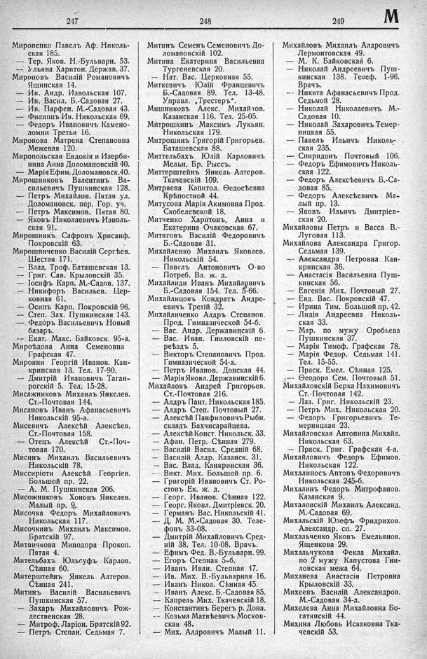

Лист источника 433
Скан

Распознанный текст
247
Мироненко Павелъ Аф. Николь-
ская 185.
— Тер. Яков. Н.-Бульварн. 53.
-- Ульяна Харитон. Держав. 37.
Мироновъ Василій Романовичъ
Ящинская 14.
— Ив. Андр. Извольская 107.
— Ив. Васил. Б.-Садовая 27.
— Ив. Парфен. М.-Садовая 43.
— Филиппъ Ив. Никольская 69.
— Федоръ Ивановичъ Камено-
ломни Третья 16.
Миронова Матрена Степановна
Межевая 120.
Миропольская Евдокія и Изерби-
нина Анна Доломановскій 40.
— Марія Ефим. Доломановск. 40.
Мирошниковъ Валентинъ Ва-
сильевичъ Пушкинская 128.
— Петръ Михайлов. Пятая ул.
Доломановск. пер. Гор. уч.
— Петръ Максимов. Пятая 80.
— Яковъ Николаевичъ Изволь-
ская 91.
Мирошникъ Сафронъ Хрисанф.
Покровскій 63.
Мирошниченко Василій Сергѣев.
Шестая 171.
— Влад. Троф. Баташевская 13.
— Григ. Сав. Крыловскій 35.
— Іосифъ Карп. М.-Садов. 137.
— Никифоръ Васильев. Цер-
ковная 61.
— Осипъ Карп. Покровскій 96.
— Степ. Зах. Пушкинская 143.
— Федоръ Васильевичъ Новый
базаръ.
-- Екат. Макс. Байковск. 95-а.
Мироѣдова Анна Семеновна
Графская 47.
Мирояни Георгій Иванов. Кан-
кринская 13. Тел. 17-90.
— Дмитрій Ивановичъ Таган-
рогскій 5. Тел. 15-28.
Мисажниковъ Михаилъ Янкелев.
Ст.-Почтовая 144.
Мисановъ Иванъ Афанасьевичъ
Никольскій 95-а.
Мисевичъ Алексѣй Алексѣев.
Ст.-Почтовая 158.
— Отецъ Алексѣй Ст.-Поч-
товая 170.
Мисинъ Михаилъ Васильевичъ
Никольскій 78.
Миссиріоти Алексѣй Георгіев.
Большой пр. 22.
— А. М. Пушкинская 206.
Мисожниковъ Хононъ Янкелев.
Малый пр. 9.
Мисочка Федоръ Михайловичъ
Никольская 117.
Мисочкинъ Михаилъ Максимов.
Братскій 97.
Митвичкова Минодора Прокоп.
Пятая 4.
Мительбахъ Юльсуфъ Карлов.
Сѣнная 60.
Митерштейнъ Янкель Альтеров.
Сѣнная 241.
Митинъ Василій Васильевичъ
Пушкинская 57.
— Захаръ Михайловичъ Рож-
дественская 28.
— Митроф. Ларіон. Братскій 92.
— Петръ Степан. Седьмая 7.
248
Митинъ Семенъ Семеновичъ До-
ломановскій 102.
Митина Екатерина Васильевна
Тургеневская 20.
— Нат. Вас. Церковная 55.
Миткевичъ Юлій Францевичъ
Б.-Садовая 89. Тел. 13-48.
Управл. „Трестеръ“.
Мишниковъ Алекс. Михайллов.
Казанская 116. Тел. 25-05.
Митрошкинъ Максимъ Лукьян.
Никольская 179.
Митрошинъ Григорій Григорьев.
Баташевская 88.
Миттельбахъ Юлій Карловичъ
Мельн. Бр. Рыссъ.
Миттерштейнъ Янкель Альтеров.
Ткачевскій 109.
Митряева Капитол. Ѳедосѣевна
Крѣпостной 44.
Митусова Марія Акимовна Прод.
Скобелевской 18.
Митченко Харитонъ, Анна и
Екатерина Очаковская 67.
Митяговъ Василій Федоровичъ
Б.-Садовая 31.
Михайленко Михаилъ Яковлев.
Никольскій 54.
— Павелъ Антоновичъ О-во
Потреб. Вл. ж. д.
Михайлиди Иванъ Михайловичъ
Б.-Садовая 154. Тел. 5-66.
Михайлицовъ Кондратъ Андре-
евичъ Третій 32.
Михайличенко Алдръ Степанов.
Прод. Гимназической 54-б.
— Вас. Андр. Державинскій 6.
— Вас. Иван. Гниловскій пе-
реѣздъ 5.
— Викторъ Степановичъ Прод.
Гимназической 54-а.
— Петръ Иванов. Донская 44.
— Марія Яковл. Державинскій 6.
Михайловъ Андрей Григорьев.
Ст.-Почтовая 216.
— Алдръ Пант. Никольская 185.
— Алдръ Степ. Почтовый 27.
— Алексѣй Панфиловичъ Рыбн.
складъ Бахчисарайцева.
— Алексѣй Конст. Никольск. 33.
— Афан. Петр. Сѣнная 279.
— Василій Васил. Средній 68.
— Василій Алдр. Казанск. 31.
— Вас. Влад. Канкринская 36.
— Викт. Мих. Большой пр. 6.
— Григорій Ивановичъ Ст. Ро-
стовъ Ек. ж. д.
— Георг. Иванов. Сѣнная 122.
— Георг. Яковл. Дмитріевск. 20.
— Германъ Вас. Никольскій 41.
— Д. М. М.-Садовая 30. Теле-
фонъ 33-08.
— Дмитрій Михайловичъ Сред-
ній 38. Тел. 10-08. Врачъ.
— Ефимъ Фед. В.-Бульварн. 99.
— Егоръ Степная 5-б.
— Иванъ Иван. Степная 47.
— Ив. Мих. В.-Бульварная 16.
— Иванъ Никол. Сѣнная 45.
— Иванъ Алекс. Б.-Садовая 85.
— Капрель Мих. Ткачевскій 18.
— Константинъ Берегъ р. Дона.
-- Козьма Матвѣевичъ Москов-
ская 48.
— Мих. Алдровичъ Малый 11.
249 М
Михайловъ Михаилъ Алдровичъ
Лермонтовская 49.
— М. К. Байковская 6.
— Николай Андреевичъ Пуш-
кинская 138. Телеф. 1-96.
Врачъ.
— Никита Афанасьевичъ Прод.
Седьмой 28.
— Николай Николаевичъ М.-
Садовая 10.
— Николай Захаровичъ Темер-
ницкая 55.
— Павелъ Ильичъ Николь-
ская 235.
— Спиридонъ Почтовый 106.
— Федоръ Ефимовичъ Николь-
ская 122.
— Федоръ Алексѣевичъ Б.-Са-
довая 85.
— Федоръ Алексѣевичъ Ма-
лый пр. 13.
— Яковъ Ильичъ Дмитріев-
ская 20.
Михайловы Петръ и Васса В.-
Луговая 113.
Михайлова Александра Григор.
Седьмая 139.
-- Александра Петровна Кан-
кринская 36.
— Анастасія Васильевна Пуш-
кинская 56.
— Евгенія Мих. Почтовый 27.
— Евд. Вас. Покровскій 47.
— Ирина Тим. Большой пр. 42.
— Лидія Андреевна Николь-
ская 33.
— Мар. по мужу Оробьева
Пушкинская 37.
— Марія Тимоф. Графская 78.
— Марія Федор. Седьмая 141.
Тел. 15-55.
— Праск. Емел. Сѣнная 125.
— Ѳеодора Сем. Почтовый 51.
Михайловскій Берка Нахимовичъ
Ст.-Почтовая 142.
— Лаз. Григ. Никольскій 23.
— Петръ Мих. Никольская 20.
— Федоръ Григорьевичъ Те-
мерницкая 23.
Михайловская Антонина Михайл.
Никольская 63.
— Праск. Григ. Графская 4-а.
Михайловичъ Федоръ Ефимов.
Никольская 122.
Михалиносъ Антонъ Федоровичъ
Никольская 245-б.
Михалинъ Федоръ Митрофанов.
Казанская 9.
Михаловскій Михаилъ Александ.
М.-Садовая 69.
Михальскій Юзефъ Фридрихов.
Александр. сп. 27.
Михальченко Яковъ Емельянов.
Ященкова 29.
Михальчукова Фекла Михайл.
по 2 мужу Капустова Гни-
ловская межа 64.
Миханева Анастасія Петровна
Крыловскій 33.
Михеевъ Василій Александров.
М.-Садовая 34-а.
Михелева Анна Михайловна Бо-
гатянскій 44.
Михина Любовь Исааковна Тка-
чевскій 53.